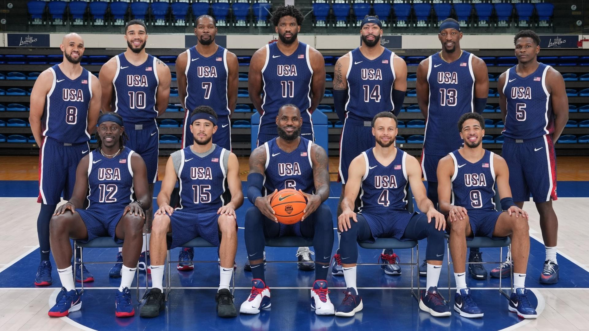

Az amerikai férfi kosárlabdacsapat története az olimpiai játékokon
Az Egyesült Államok férfi kosárlabdacsapata az olimpiai kosárlabda történetének legismertebb és legsikeresebb szereplője. Az 1936-os berlini olimpia óta, amikor a sportág először bekerült a programba, az USA csapata az évtizedek során domináns erőként tette le névjegyét.
1. Korai sikerek: 1936–1960
Az első olimpiai kosárlabdatornát 1936-ban rendezték Berlinben, ahol az amerikai csapat az aranyéremmel debütált. Ez az időszak a hagyományos amatőr játékosok időszaka volt, akik főként egyetemi szintű sportolók voltak. Az USA egészen 1960-ig minden olimpián aranyérmet nyert, miközben az ellenfelek nem tudtak lépést tartani az amerikai kosárlabda színvonalával. Az 1960-as római olimpia csapata különösen emlékezetes volt, mivel a jövőbeli NBA-legendák, például Jerry West és Oscar Robertson is szerepeltek benne.
2. A szovjet kihívás és az első vereség: 1972
Az USA dominanciáját az 1972-es müncheni olimpia törte meg, amikor egy drámai döntőben a Szovjetunió megszerezte az aranyérmet. Ez a mérkőzés a kosárlabda történetének egyik legvitatottabb pillanata volt, mivel az utolsó másodpercekben bírói döntések és időmérési problémák miatt az amerikaiak elveszítették hibátlan olimpiai rekordjukat.
A vereség ösztönzőleg hatott a csapatra, és az amerikai kosárlabda közösség egyre inkább felismerte, hogy a nemzetközi mezőny gyors fejlődésen megy keresztül.
3. A Dream Team születése: 1992
Az 1988-as szöuli olimpiai bronzérem után, ahol az USA amatőr csapata nem tudta megvédeni korábbi sikereit, a Nemzetközi Kosárlabda Szövetség (FIBA) 1992-ben engedélyezte az NBA-profik részvételét az olimpián. Így jött létre a „Dream Team”, amely Michael Jordan, Magic Johnson, Larry Bird és más NBA-sztárok vezetésével Barcelonában lépett pályára. Ez a csapat a sporttörténelem egyik legikonikusabb együttese lett, és nemcsak veretlenül nyerte meg az aranyérmet, hanem forradalmasította a nemzetközi kosárlabdát, népszerűvé téve azt világszerte.
4. Kihívások és visszatérések: 2000–2020
A 2000-es évek elején az amerikai csapat elvesztette korábbi dominanciáját. Az 2004-es athéni olimpiai bronzérem fájó pont volt, mivel a csapatot NBA-sztárok alkották, de a rossz csapatkémia és a nemzetközi kosárlabda fejlődése megmutatta, hogy az USA már nem verhetetlen.
Ezt követően az USA Basketball újjászervezte a programot, és a 2008-as pekingi olimpián egy „Redeem Team”-nek nevezett csapat állt össze, amely Kobe Bryant, LeBron James és Dwyane Wade vezetésével visszahódította az aranyérmet. Az amerikaiak azóta megőrizték helyüket a csúcson, aranyérmeket nyerve 2012-ben Londonban, 2016-ban Rióban és 2021-ben Tokióban (2020-as játékok halasztása miatt).
5. Az örökség és a jövő
Az amerikai férfi kosárlabdacsapat története nemcsak a győzelmekről szól, hanem a sportág globális hatásáról is. A Dream Team népszerűsége és a kosárlabda terjesztése hozzájárult ahhoz, hogy a sportág ma az egyik legnépszerűbb a világon. Az USA továbbra is a kosárlabda vezető nemzete, de a globális verseny egyre erősebb, amely arra készteti a csapatot, hogy folyamatosan fejlessze játékát.